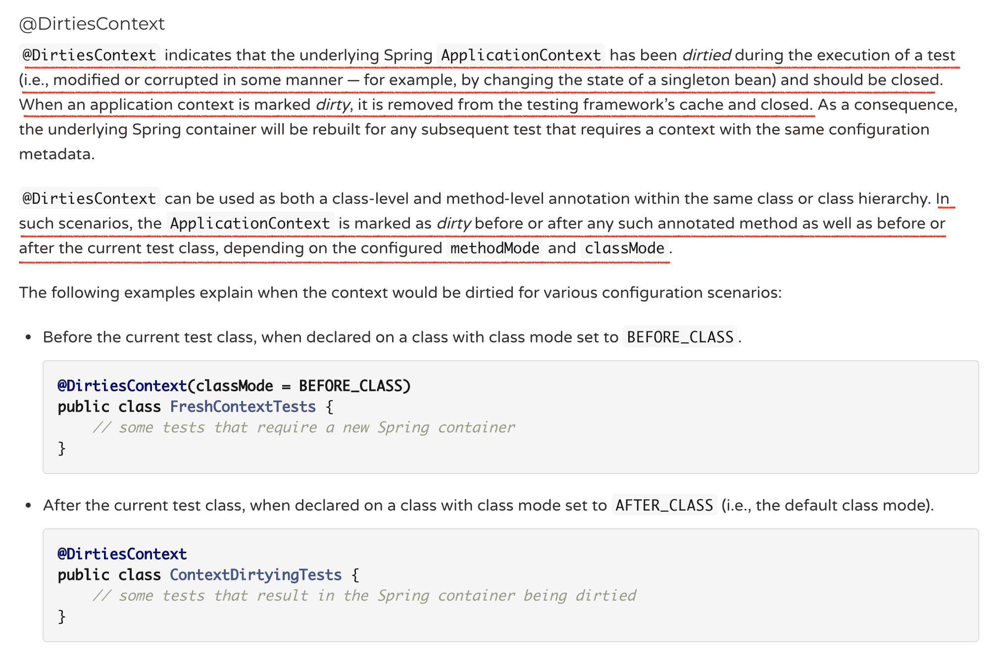
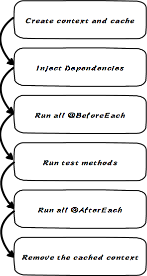

测试又随机挂了，该怎么办？加上 @DirtiesContext 试试。真棒，修好了。
WAIT! WAIT! WAIT! 为什么加 @DirtiesContext 就修好，有没有什么副作用？
@DirtiesContextis a spring test annotation which is used to indicate that the application context cached should be removed and reloaded after each test run. The application context removed will also be closed.
如上面所述，@DirtiesContext 会导致application context不被缓存，也就是说，有可能会对测试运行的速度有影响。官方文档介绍@DirtiesContext：

如果在测试类上，使用@DirtiesContext注解，待整个测试类的所有测试执行结束后，该测试的application context会被关闭，同时缓存会清除。@DirtiesContext分为method-level和class-level。
method-level只有当@DirtiesContext注解设置在test method上的才会生效，methodMode有两种配置：BEFORE_METHOD、AFTER_METHOD，默认是AFTER_METHOD。class-level只有当@DirtiesContext注解设置在test class上的才会生效，classMode有四种配置：BEFORE_CLASS、BEFORE_EACH_TEST_METHOD、AFTER_EACH_TEST_METHOD、AFTER_CLASS，默认是AFTER_CLASS。- 生命周期：
写在最后
虽然使用@DirtiesContext，可以保证每个test class的执行上下文的独立性、隔离性，但是也会有让测试运行速度变慢的副作用。所以在使用@DirtiesContext前，弄清楚你是否真的需要使用它。